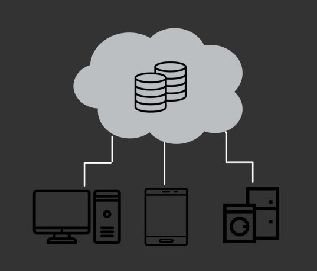

엣지 컴퓨팅의 선두주자, 엔비디아
앞서 설명한 데이터 센터들은 결국 클라우드 컴퓨팅을 위한 것인데, 2010년대 초까지만 해도, 데이터 센터와 클라우드는 단순히 수집된 데이터들을 저장해놓는 역할과 휴대폰이나 가전과 같은 엣지 디바이스가 데이터를 요구하면 저장해두었던 해당 데이터를 단순히 전송만 해주는 역할을 수행했지만 현재의 클라우드 컴퓨팅은 수집된 데이터를 엣지 디바이스 내에서 처리하는 것이 아닌 데이터 센터와 같이 대용량의 고성능 데이터 처리 장치가 집적된 중앙으로 보내 그 중앙에서 데이터를 연산하는 방식을 말한다.
그런데 현재의 클라우드 컴퓨팅 방식은 처리해야할 데이터의 양이 시간이 갈수록 폭발적으로 증가하면서 중앙 데이터 센터에 부하가 자주 발생하여 속도가 느려지고 보안 면에서 위험성이 크다는 한계에 부딪히고 말았다. 여기서 엔비디아는 엣지 컴퓨팅이라는 솔루션을 제시한다. 엣지 컴퓨팅이란 기존의 중앙 데이터 센터 하위에 또 다른 데이터 센터를 엣지 디바이스 가까이에 분산하여 그 하위 데이터 센터에서 데이터를 처리하는 방식을 말한다.
클라우드 컴퓨팅의 변천사--이미지 클릭

--설명란--
제이쿼리 문법으로 이미지를 클릭하면 % 연산자로 인덱스에 해당하는 변수를 루프가 돌게하고 인덱스에 해당하는 이미지를 attr()을 이용하여 문석 객체 추가 해주었습니다.